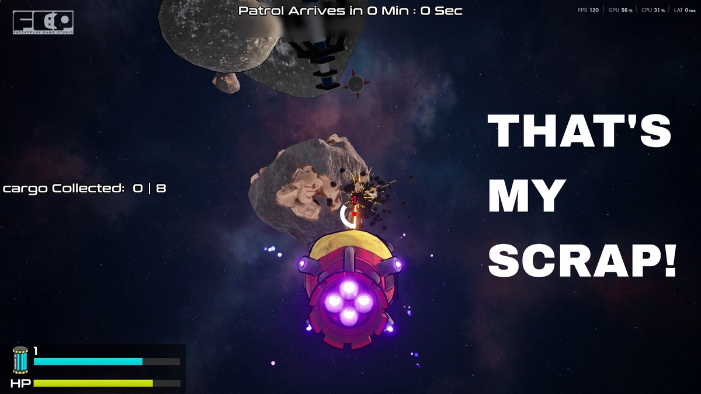
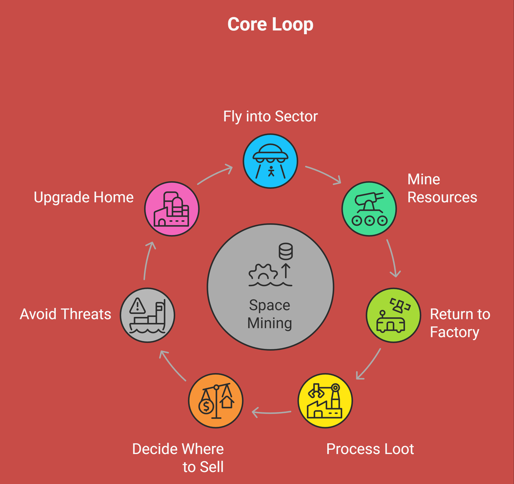

*Note: Due to NDA, internal documents and specific code logic cannot be shared. This case study focuses exclusively on my foundational system design and level blockout philosophy.*
Take your flying factory into space, strip a sector for scrap, and try to survive capitalism.
That's My Scrap! is a physics-driven, 4-player co-op asteroid mining simulator. Players pilot individual spacecraft equipped with gravity tools while collectively managing a massive, shared cargo carrier (the FORGE). The core challenge is not combat, but coordination under pressure.


The Gravity Beam strictly enforces team play through mass and physics.
In early tests, highly skilled solo players could dominate the session, carrying cargo and clearing paths themselves while leaving the rest of the team as mere spectators.
I documented a strict physics constraint for the primary tool: 1 Player holding heavy cargo = Extremely slow movement. 2+ Players attaching beams = Fast, stabilized movement.
This simple rule acts as the signature co-op mechanic. It brutally punishes lone-wolf play, forces vocal communication, and creates dramatic "wait for me!" moments under time pressure.
Rather than giving players specific keys for specific locks, we designed a sandbox of tools. Complexity and fun emerge from how players combine these tools to solve spatial problems.
Player A grapples the cargo; Player B blasts it across space with the Pusher.
Design Goal: Extremely fast cargo movement, perfect for last-second saves under time pressure, but highly dangerous for fragile or hazardous goods.
Players can carry massive scrap whole (slow but full payout) or cut it into pieces (fast but reduces the final value).
Design Goal: Player-made difficulty scaling. It forces smart risk vs. reward decision-making under intense pressure.
The Charged Gun enables interaction with rare, illegal cargo, but loses charge constantly, requiring map travel to refill.
Design Goal: Forces players outside the established safe paths and makes the world map meaningful and dangerous.
Forced tutorials ruin the pacing of party games. I drafted an onboarding flow built entirely on Environmental Affordances to teach players naturally.

The foundational loop designed to teach the base economy.
To manage production scope and control pacing, the world was structured using a Hub-and-Spoke topology. The Hub is 100% safe. The Spokes are linear, standalone missions. Below is my layout logic for the very first "Training Spoke."
A calm open area connected directly from the Hub portal, filled with small floating asteroids and clear visibility. There is absolutely no cargo or time pressure here.
Player Outcome: "I understand how my ship moves in space."Players are introduced to the large Carrier Crate. The path gradually narrows using massive asteroid walls, forcing players to ride the carrier grid and move together as a single unit.
Player Outcome: "I understand how to coordinate shared movement."The area opens up. Regular training cargo is placed clearly in view. Players must use the Gravity Gun to attach, align, and drop the cargo successfully into the carrier grid slots.
Player Outcome: "I understand the primary cargo interaction loop."Players encounter a blocked passage made of scrap and debris. They must realize that the Gravity Gun isn't just for hauling loot—it can be used to pull debris aside to open the golden path forward.
Player Outcome: "I can use my tools to solve environmental puzzles."